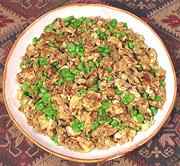

|
Egg Curry with PeasNepal - Phul Ko Tarkari | ||||
| Serves: Effort: Sched: DoAhead: |
2 break ** 35 min Some |
This recipe makes a breakfast. I'm not sure how or when Nepalese serve this dish, but it wouldn't be for breakfast. Eggs are very costly all over the Indian subcontinent and reserved for special occasions. | |||
|
|
6 3/4 5 2 1 ------ 1/2 1/4 1/8 2/3 1 1/4 ------ 1-1/2 |
lrg c oz cl in ---- t t t t t t ---- T |
Eggs Peas, green Onion Garlic Ginger root -- Spices Cumin seed Corriander seed Turmeric Salt Chili Powder (1) Garam Masala -------------- Butter or Ghee |
This recipe will serve two for breakfast alone, 4 with sausages (but that wouldn't be exactly Nepalese). Prep - (8 hrs)
|